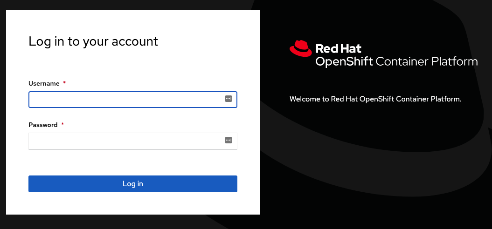
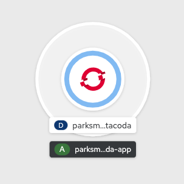
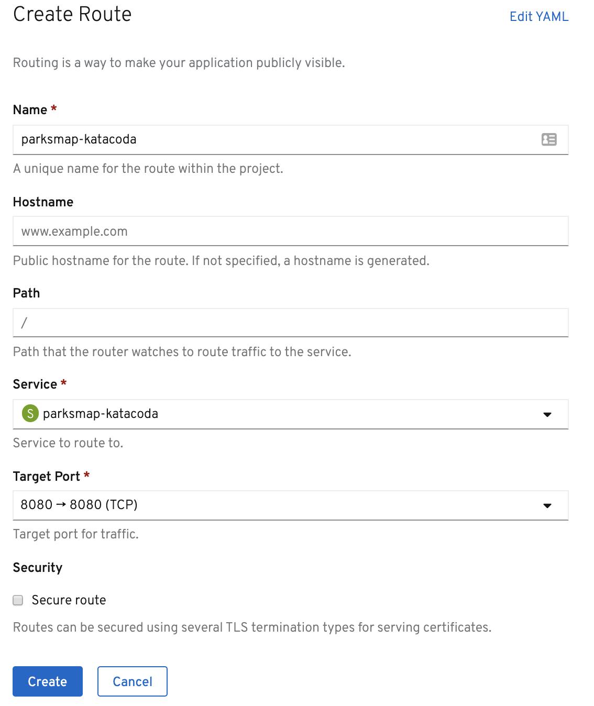
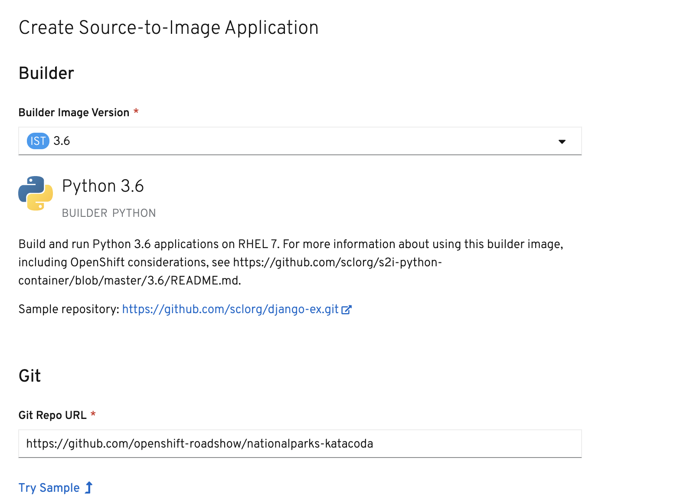
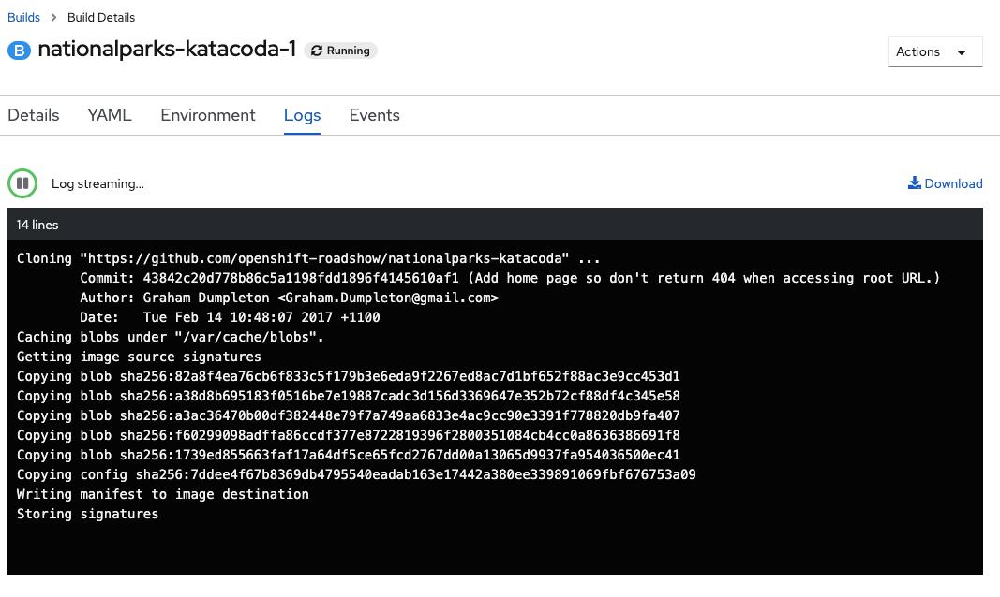
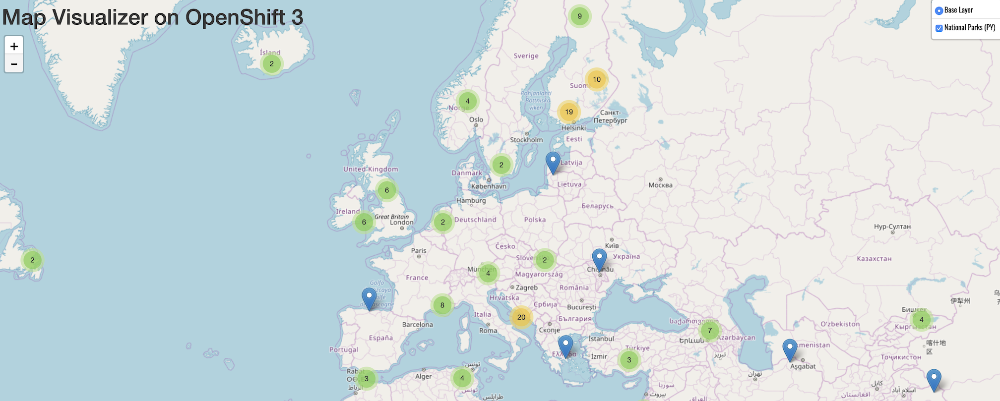

Lab 1 : Connect to Openshift and create your first application using the Web interface
In this lab, we will connect to OpenShift and create an application from the Web Interface
Step 1 : Exploring The Web Console
Exercise: Logging in with the Web Console
To begin, click on the Console tab on your screen. This will open the web console on your browser.
You should see a Red Hat OpenShift Container Platform window with Username and Password forms as shown below:

After logging in to the web console, you'll be on a Projects page.
What is a project? Why does it matter?
OpenShift is often referred to as a container application platform in that it is a platform designed for the development and deployment of applications in containers.
To group your application, we use projects. The reason for having a project to contain your application is to allow for controlled access and quotas for developers or teams.
More technically, it's a visualization of the Kubernetes namespace based on the developer access controls.
Exercise: Creating a Project
Click the blue Create Project button.
You should now see a page for creating your first project in the web console. Fill in the Name field as myproject.

The rest of the form is optional and up to you to fill in or ignore. Click Create to continue.
After your project is created, you will see some basic information about your project.
Exercise: Explore the Administrator and Developer Perspectives
Notice the navigation menu on the left. When you first log in, you'll typically be in the Administrator Perspective. If you are not in the Administrator Perspective, click the perspective toggle and switch from Developer to Administrator.

You're now in the Administrator Perspective, where you'll find Operators, Workloads, Networking, Storage, Builds, and Administration menus in the navigation.
Take a quick look around these, clicking on a few of the menus to see more options.
Now, toggle to the Developer Perspective. We will spend most of our time in this tutorial in the Developer Perspective. The first thing you'll see is the Topology view. Right now it is empty, and lists several different ways to add content to your project. Once you have an application deployed, it will be visualized here in Topology view.
Step 3 - Deploying a Docker Image
In this section, you are going to deploy the front end component of an application called parksmap. The web application will display an interactive map, which will be used to display the location of major national parks from all over the world.
Exercise: Deploying Your First Image
The simplest way to deploy an application in OpenShift is to take an existing container image and run it. We are going to use the OpenShift web console to do this, so ensure you have the OpenShift web console open with the Developer Perspective active and that you are in the project called myproject.
The OpenShift web console provides various options to deploy an application to a project. For this section, we are going to use the Container Image method. As the project is empty at this point, the Topology view should display the following options: From Git, Container Image, From Catalog, From Dockerfile, YAML, and Database.
Choose the Container Image option.

In the future, to get back to this menu of ways to add content to your project, you can click +Add in the left navigation.
Within the Deploy Image page, enter the following for Image name from external registry:
docker.io/openshiftroadshow/parksmap-katacoda:1.2.0
Press tab or click outside of the text box to validate the image:

The Application Name field will be populated with parksmap-katacoda-app and the Name field with parksmap-katacoda. This name will be what is used for your application and the various components created that relate to it. Leave this as the generated value as steps given in the upcoming sections will use this name.
By default, creating a deployment using the Container Image method will also create a Route for your application. A Route makes your application available at a publicly accessible URL.

Normally, you would keep this box checked, since it's very convenient to have the Route created for you. For the purposes of learning, un-check the box. We'll learn more about Routes later in the tutorial, and we'll create the Route ourselves then.
You are ready to deploy the existing container image. Click the blue Create button at the bottom of the screen. This should bring you back to the Topology view, where you'll see a visual representation of the application you just deployed. As the image deployment progresses, you'll see the ring around the parksmap-katacoda deployment progress from white to light blue to blue.

These are the only steps you need to run to get a "vanilla" container image deployed on OpenShift. This should work with any container image that follows best practices, such as defining the port any service is exposed on, not needing to run specifically as the root user or other dedicated user, and which embeds a default command for running the application.
Step 3 - Scaling Your Application
Let's scale our application up to 2 instances of the pods. You can do this by clicking inside the circle for the parksmap-katacoda application from Topology view to open the side panel. In the side panel, click the Details tab, and then click the "up" arrow next to the Pod in side panel.

To verify that we changed the number of replicas, click the Resources tab in the side panel. You should see a list with your pods similar to the image below:

You can see that we now have 2 replicas.
Overall, that's how simple it is to scale an application (Pods in a Service). Application scaling can happen extremely quickly because OpenShift is just launching new instances of an existing image, especially if that image is already cached on the node.
Application "Self Healing"
OpenShift's Deployments are constantly monitoring to see that the desired number of Pods is actually running. Therefore, if the actual state ever deviates from the desired state (i.e., 2 pods running), OpenShift will work to fix the situation.
Since we have two Pods running right now, let's see what happens if we "accidentally" kill one.
On the Resources tab where you viewed the list of pods after scaling to 2 replicas, open one of the pods by clicking its name in the list.
In the top right corner of the page, there is an Actions drop down menu. Click it and select Delete Pod.

After you click Delete Pod, click Delete in the confirmation dialog. You will be taken to a page listing pods, however, this time, there are three pods. Note that on smaller screens you may not see all of these columns.

The pod that we deleted is terminating (i.e., it is being cleaned up). A new pod was created because OpenShift will always make sure that, if one pod dies, there is going to be new pod created to fill its place.
Exercise: Scale Down
Before we continue, go ahead and scale your application down to a single instance. Click Topology to return to the Topology view, then click parksmap-katacoda and on the Overview tab, click the down arrow to scale back down to one instance.
Step 5 - Routing HTTP Requests
Services provide internal abstraction and load balancing within an OpenShift environment, but sometimes clients (users, systems, devices, etc.) outside of OpenShift need to access an application. The way that external clients are able to access applications running in OpenShift is through the OpenShift routing layer. The resource object which controls this is a Route.
The default OpenShift router (HAProxy) uses the HTTP header of the incoming request to determine where to proxy the connection. You can optionally define security, such as TLS, for the Route. If you want your Services, and, by extension, your Pods, to be accessible to the outside world, you need to create a Route.
As we mentioned earlier in the tutorial, the Container Image method of deploying an application will create a Route for you by default. Since we un-checked that option, we will manually create a Route now.
Exercise: Creating a Route
Fortunately, creating a Route is a pretty straight-forward process. First, go to the Administrator Perspective by switching to Administrator in the Developer drop down menu. Ensure that your myproject project is selected from the projects list. Next, click Networking and then Routes in the left navigation menu.
Click the blue Create Route button.

Enter parksmap-katacoda for the Route Name, select parksmap-katacoda for the Service, and 8080 for the Target Port. Leave all the other settings as-is.

Once you click Create, the Route will be created and displayed in the Route Details page.

You can also view your Route in the Developer Perspective. Toggle back to the Developer Perspective now, and go to Topology view. On the parksmap-katacoda visualization you should now see an icon in the top right corner of the circle. This represents the Route, and if you click it, it will open the URL in your browser.

Once you've clicked the Route icon, you should see this in your browser:

Step 5 - Building From Source Code
In this section, you are going to deploy a backend service for the ParksMap application. This backend service will provide data, via a REST service API, on major national parks from all over the world. The ParksMap front end web application will query this data and display it on an interactive map in your web browser.
Background: Source-to-Image (S2I)
In a previous section, you learned how to deploy an application (the ParksMap front end) from a pre-existing container image. Here you will learn how to deploy an application direct from source code hosted in a remote Git repository. This will be done using the Source-to-Image (S2I) tool.
The documentation for S2I describes itself in the following way:
Source-to-image (S2I) is a tool for building reproducible container images. S2I produces ready-to-run images by injecting source code into a container image and assembling a new container image which incorporates the builder image and built source. The result is then ready to use with docker run. S2I supports incremental builds which re-use previously downloaded dependencies, previously built artifacts, etc.
OpenShift is S2I-enabled and can use S2I as one of its build mechanisms (in addition to building container images from Dockerfiles and "custom" builds).
A full discussion of S2I is beyond the scope of this tutorial. More information about S2I can be found in the OpenShift S2I documentation and the GitHub project respository for S2I.
The only key concept you need to remember about S2I is that it handles the process of building your application container image for you from your source code.
Exercise: Deploying the application code
The backend service that you will be deploying in this section is called nationalparks-katacoda. This is a Python application that will return map coordinates of major national parks from all over the world as JSON via a REST service API. The source code repository for the application can be found on GitHub at:
To deploy the application you are going to use the +Add option in the left navigation menu of the Developer Perspective, so ensure you have the OpenShift web console open and that you are in the project called myproject. Click +Add. This time, rather than using Container Image, choose From Catalog, which will take you to the following page:

If you don't see any items, then uncheck the Operator Backed checkbox. Under the Languages section, select Python in the list of supported languages. When presented with the options of Django + Postgres SQL, Django + Postgres SQL (Ephemeral), and Python, select the Python option and click on Create Application.

For the Git Repo URL use:
https://github.com/openshift-roadshow/nationalparks-katacoda

Once you've entered that, click outside of the text entry field, and then you should see the Name of the application show up as nationalparks-katacoda. The Name needs to be nationalparks-katacoda as the front end for the ParksMap application is expecting the backend service to use that name.
Leave all other options as-is.
Click on Create at the bottom right corner of the screen and you will return to the Topology view. Click on the circle for the nationalparks-katacoda application and then the Resources tab in the side panel. In the Builds section, you should see your build running.

This is the step where S2I is run on the application source code from the Git repository to create the image which will then be run. Click on the View Logs link for the build and you can follow along as the S2I builder for Python downloads all the Python packages required to run the application, prepares the application, and creates the image.

Head back to Topology view when the build completes to see the image being deployed and the application being started up. The build is complete when you see the following in the build logs: Push successful.

The green check mark in the bottom left of the nationalparks-katacoda component visualization indicates that the build has completed. Once the ring turns from light blue to blue, the backend nationalparks-katacoda service is deployed.
Now, return to the ParksMap front end application in your browser, and you should now be able to see the locations of the national parks displayed. If you don't still have the application open in your browser, go to Topology view and click the icon at the top right of the circle for the parksmap-katacoda application to open the URL in your browser.

Congratulations! You just finished learning the basics of how to get started with the OpenShift Container Platform.